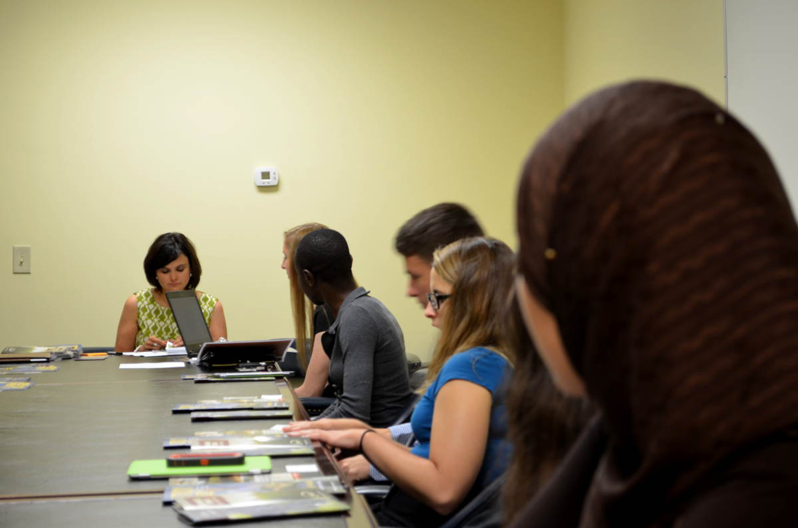
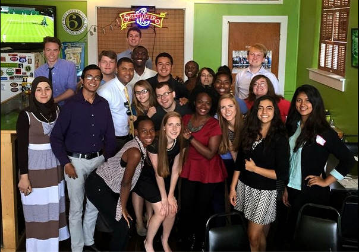

Day 1
As a sort of close to the entire “Berea Trail Town Possess” segment in EPG, we traveled to Frankfort, Kentucky to ask for letters from the Department of Agriculture and from the Kentucky Arts Council. One member of our cohort led the discussion and made the final ask while the rest of us observed and stepped up to answer questions posed by the letter writers. Everyone seemed pleased with our work and promptly agreed to write and send their letters.
 Asking for the letter from representative of the Department of Agriculture.  EPG Cohort 12 at Buddy's Pizza in FrankfortWe walked from the Kentucky Arts Council building to Buddy’s Pizza and enjoyed a nice lunch.
My team lobbin' in the Kentucky State Capitol.We made the most of our time in Frankfort and visited the Kentucky Capitol Building. Both the house and the senate chambers were under construction so we were limited to walking the opulent lobby and central portion of the building. After taking enough photos to satisfy the internet for the next week, we left to go back to Berea where we had a night session to discuss the plan for the remainder of our last week together.
Day 2
We had each been given a 30 minute time slot to meet one on one with Dr. Hackbert to discuss our experience with Dr. Hackbert and express any concerns or qualms we had. Between all 20 of us, Hackbert spent the better part of 12 hours in meetings so needless to say, there was no class.
The international students in our cohort had been pleading Dr. Hackbert to allow them to cook a traditional meal from their home country to share with the cohort. Over the weekend, Hackbert drove the internationals to Lexington, KY to browse the international foods stores and paid for their ingredients. The internationals were working in the kitchen almost all day to prepare their meals and were recruiting fellow students leaving Dr. Hackbert’s office from their interviews. I agreed to help chop potatoes, onions and tomatoes for a Lebanese dish. I stuck around for the entire cooking process until we began the feast at 9pm out of courtesy for our Muslim members observing Ramadan.
After everyone finished their first plate of international dishes hailing from Central America, the Middle East, and Africa, we unanimously decided that we should share our favorite moment from our EPG experience. Whoever went first, decided “favorite” meant “funniest” and the stories flowed. Some we all experienced, some we were just hearing about. We heard everything from mockery of Hackbert’s proclivity to mispronounce people’s names, to a party of internations who walked into Kroger’s pretending to not understand English and each person speaking their native language to confused employees. For the first time, many of us saw Hackbert laugh so hard he cried, as many of us were.
We departed at 11pm sore from laughing and reflecting on the good times we had together.
Day 3
The last two days were scripted, routine, and boring as we had to listen to our fellow members present for 30 minutes, following the same presentation template, about their learnings and personal discoveries gained from EPG. Needless to say, these presentations began to sound the same after about 10 presenters had already had their 30 minutes of fame. We sat through 5 hours of this with a lunch break in between and would do the same tomorrow.
Day 4
This was the day that I would present. I’ve embedded my presentation below:
I knew that I was going near the end and decided to spice up my presentation by including a section highlighting the importance and value of blogging as well as some advice for getting started with a blog since some of my cohort members have shown an interest after seeing me blog.
I have to say, my presentation wasn’t phenomenal; something deep inside me kept me from sounding enthusiastic or excited about the information I needed to present after hearing 16 others before me spill the same beans.
Nonetheless, we all finished strong and presented Hackbert and his team of faculty, assistants and students with a plethora of thank you cards with personalized messages to show our appreciation. With that, our 8 weeks was over. I think we all could agree that there was no better way we could have spent our summer and we walked away to go our separate paths until fall semester. Each of us with 19 new friends and one new “Papa Peter”.
Thanks and Going Forward
I’d like to take this moment to thank everyone who followed me through my EPG Summer Institute experience. I want to diverge away from these kind of journal-like blog posts. What I will be doing in the following weeks is writing informative, packaged blog posts about the new tools, methods, and learnings I was exposed to in EPG. I want to share some of my learning from EPG with the world. This series will not receive any more updates until next year (summer 2016) when I embark on my internship as a part of the second summer (Direct Field Experience).